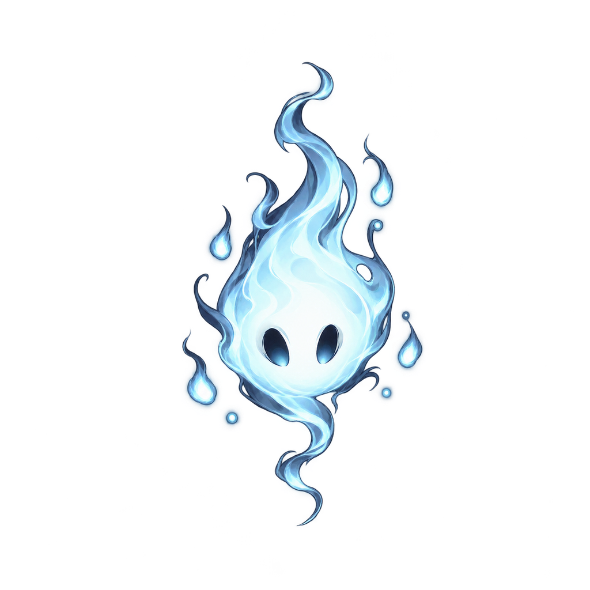
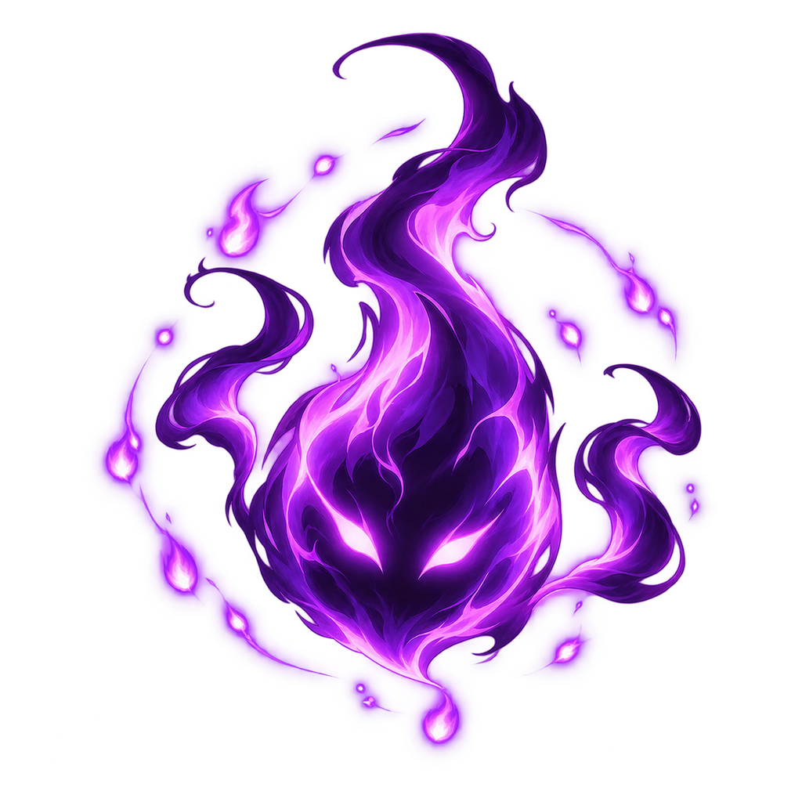
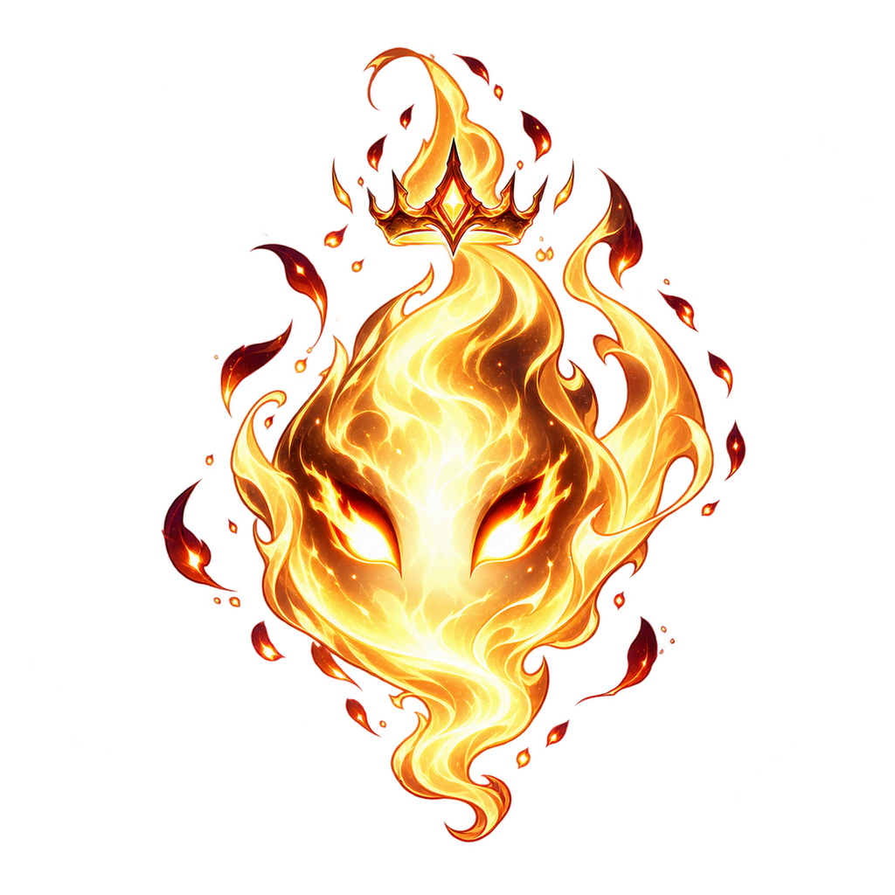

RUH KÜRELERİ

NORMAL
xp < 5

ELİT
5 ≤ xp < 80

ARA BOSS
xp ≥ 80
OYUN ÖLÇEĞİ (34 / 48 / 68 px) · ZEMİN ÜSTÜNDE
gösterim ×2 büyütülmüş; gerçek ekranda 34 / 48 / 68 px
RENK KÖRLÜĞÜ SİMÜLASYONU (YAKLAŞIK)
NORMAL
PROTAN
DEUTAN
TRITAN
GRİ
ÖLÇÜM (128 px, opak çekirdek)
L* normalprotandeutantritanalan
NORMAL79,080,478,079,1%11
ELİT36,236,938,037,4%25
ARA BOSS74,170,676,073,1%23
Silüet IoU: normal–elit 0,37 · normal–boss 0,46 · elit–boss 0,51 (≤0,6 ✓). L* farkı normal–boss yalnız 4,9 → ayrım boyut (1:2) + taç silüeti.